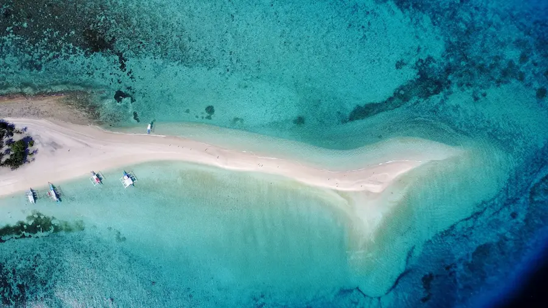
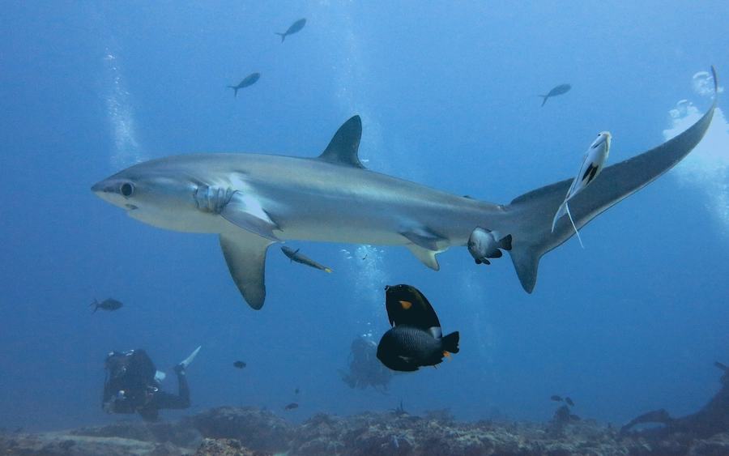
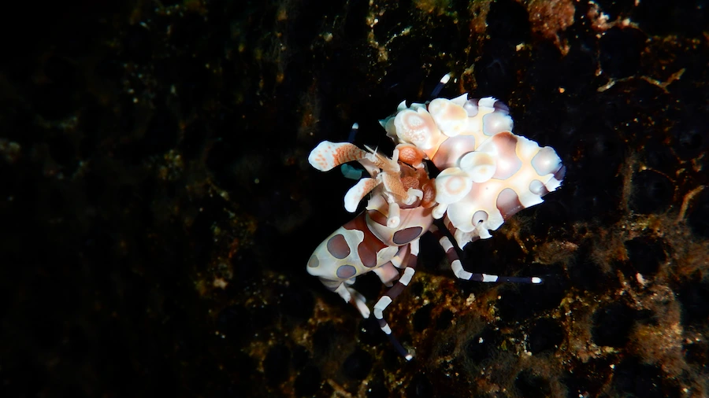
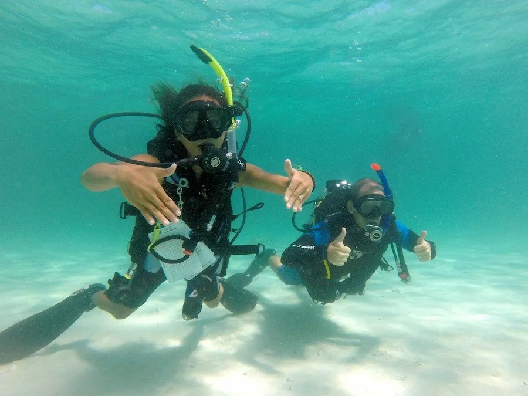
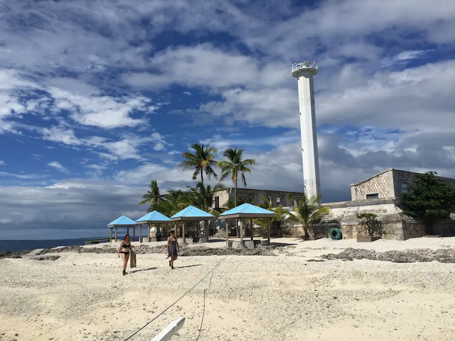
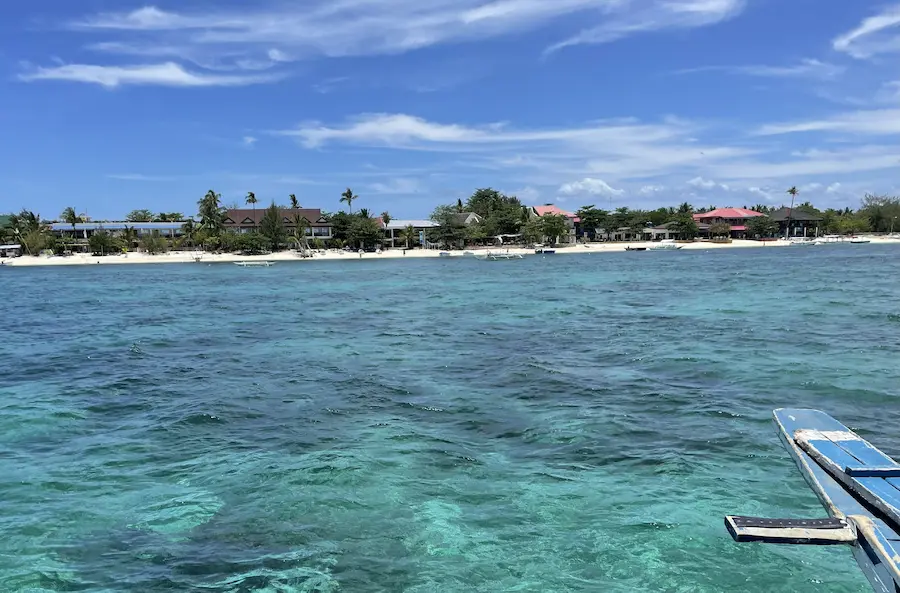

Galerie













Mitten unter Fuchshaien, Inseln und dem lokalen Leben
Reiseplanung - Aktivitäten - Buchungen - Tipps und Tricks.
Diese Seite betreiben wir aus reinem Spass und Liebe zur Insel, da wir uns hier perfekt auskennen und die Einheimischen unterstützen möchten. Wir sind also kein klassisches Reisebüro - wir wollen etwas Besseres sein. Durch unsere Familie auf der Insel sowie unserem jahrelangen Leben und Arbeiten vor Ort kennen wir die Insel, Resorts, Tauchschulen und Einheimischen bestens und sind immer auf dem neuesten Stand. Die Philippinen sind ein Drittweltland und ständig ändern sich die Gegebenheiten wieder und wieder (neue Transferwege, Tauchschulen öffnen und schliessen, Attraktionen kommen und gehen). Auch heisst teuer nicht = gut und günstig nicht = schlecht. Deshalb ist es toll, einen Kontakt vor Ort zu haben: Das wären dann wir - **Schweizer Qualität mit einheimischem Wissen**.
Wir geben euch Empfehlungen, Hinweise und viele zusätzliche Informationen zum Tauchen, Tauchkursen, Unterkünften, Transfers, zum Essen, für Aktivitäten, Langzeitmieten und speziellen Orten. Für Malapascua selbst können wir für euch Buchungen von Resorts, Tauchshops, Transfers und Aktivitäten vornehmen. Vor Ort gibt's dann natürlich auch entsprechend Unterstützung, wenn erwünscht. Malapascua soll allen Besuchern als Highlight-Ferienziel in Erinnerung bleiben - egal ob Taucher oder Nichttaucher, Single oder Paar, jung oder alt, mit oder ohne Kindern.
Die Region rund um Malapascua bietet ein originelles Leben inmitten der Bevölkerung, kristallklares Wasser, wunderschöne Strände und eine reiche Unterwasserwelt - darunter Fuchshaie, Seepferdchen, Nacktschnecken, Schlagen und farbenfrohe, gesunde Korallenriffe.
Malapascua ist nicht eine typische Touristeninsel. In Malapascua leben und arbeiten die Einheimischen von Malapascua selbst - und man ist mitten im lokalen Geschehen. Das macht die Insel zu etwas ganz Besonderem. Da die Filipinos von jung bis alt sehr gut Englisch sprechen, fällt der Austausch leicht. Die Offenheit und Gastfreundschaft spürt man überall und man kann sich dementsprechend komplett frei bewegen und ist überall willkommen. Im lokalen Markt isst man zusammen mit den Einheimischen, und bei Bedarf kann man sich ihnen danach bei Karaoke oder *Balot* (spezieller Filipino Snack) anschliessen.
Auch für Nichttaucher bietet das autofreie Malapascua viel - traumhafte weisse Sandstrände, bombastische tiefrote Sonnenuntergänge, leckere Happy hours, entspannende Massagen, Yoga, Schnorcheln, Inselhüpfen und vieles mehr.
Natürlich ist Malapascua als eines der weltweiten Top-Tauchgebiete bekannt. Wunderschöne gesunde Weichkorallenriffe, Wälder von Schwarzkorallen, Steilwände, Pinnacles, Tunnels und sandige Makroflächen bieten eine grosse Abwechslung. Die Wassertemperatur liegt je nach Monat zwischen angenehmen 26 und 30 Grad, so sind auch die möglichen Nachttauchgänge empfehlenswert. Unter Wasser kann man ganzjährig sehen: Fuchshaie, Tigerhaie, Riffhaie (Weissspitzen und junge Schwarzspitzen), Teufelsrochen, Schildkröten, Schlangen, diverse Nacktschnecken inkl. Spanish dancer, Seepferdchen (auch Pygmäen), Anglerfische, verschiedene Drachenköpfe, Fledermausfische, Makrelen, Oktopusse (inkl. blaugeringelter), Sepias, Krabben von klein bis gross und die wunderschönen Mandarinfische beim Paaren etc.
Rund um den Flughafen Cebu, von wo aus man nach Malapascua reist, gibt es viele tolle Gebiete für Taucher sowie Nichttaucher, welche sich perfekt mit Malapascua verbinden lassen, ohne dass man viel Transferzeit verliert. Zu diesen Gebieten zählt Cebu selbst, wie auch Bohol, Siquijor, Moalboal, Dauin etc. Mit einem Flug nach Cebu ist man mitten im Paradies gelandet.
Vanessa ist 1996 geboren und auf Malapascua aufgewachsen. Sie ist die Älteste von sieben Geschwistern und ihr Vater war der erste einheimische Tauchlehrer in Malapascua. Seit 2014 arbeitet Vanessa mit viel Herz und grossem Wissen als Tauchguide bzw. Tauchlehrerin in diversen Tauchschulen in Malapascua. Seit 2021 spricht und unterrichtet sie auch in Deutsch, da sie von 2020 bis 2024 einige Jahre in der Schweiz gelebt und gearbeitet hat. In den Philippinen sowie den umliegenden Ländern hat sie bereits diverse Tauchgebiete erkundet.
Dominik ist 1988 geboren und in der Schweiz aufgewachsen. Seit er Vanessa im Jahr 2017 kennengelernt und 2019 geheiratet hat, wohnt er abwechslungsweise in Malapascua und der Schweiz. Er ist seit 2017 Tauchlehrer und hat diverse Tauchgebiete in und um Malapascua bzw. die Philippinen kennengelernt und verschiedene gute Verbindungen aufgebaut. Gute Organisationserfahrung und Kundenorientierung hat er während seiner Arbeit als Kundenberater während 20 Jahren in der Schweiz gesammelt.
Schreib uns für Fragen, die konkrete Planung oder individuelle Wünsche hier (danach auch via Whatsapp möglich):